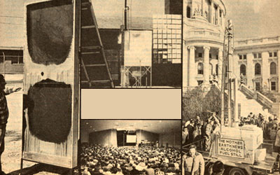

In response to the many who've asked, "What became of the solar still?" - as well as those who ask, "What next?" -MOTHER presents
A little over a year ago-in issue 55MOTHER Published an interview with a Minnesota farmer by the name of Lance Crombie . . . a gentleman who-single-handed-was probably responsible for "planting the seed" that started the whole alcohol fuel movement that's now thriving in this country.
As a result of that interview MOTHER applied for, and was granted, a federal experimental distilled spirits permit . . . which gave this publication's investigators a license to try their hands at still design, mash formulation, and the practical use of ethanol-in home heating furnaces and various internal combustion engines-for a period of two years.
Today-15 months after the permit was issued MOTHER's research team has come to be recognized as one of the nation's most knowledgeable authorities on the small-scale production and use of alcohol fuel. It wasn't an easy road, to be sure . . . and by no means are we anywhere near the end of our research. But at this point in time-especially after a series of overwhelmingly successful on the-road alcohol fuel seminars-we felt that MOTHER's readers might be interested in learning how we progressed from being mere listeners to becoming "state of the art" doers in just over a year.
Back during the tail end of 1978, when Lance Crombie and his solar still were big news in Minnesota, not many people realized that grain alcohol could actually be used as a source of energy. Not that the fuel's capability was a secret, mind you . . . after all, the USDA had published bulletins as early as 1907 which covered the subject in detail. It's just that over the years-especially while a seemingly endless supply of gasoline was available-the technology (and the very concept) of homemade alcohol fuel had gradually been forgotten.
Of course, with the advent of the energy crunch, a number of farsighted individuals began to investigate this alternative to petroleum-based fuels . . . and that research, in its turn, eventually resulted in a sizable alcohol fuel "movement", the full force of which has yet to be seen.
CREDIT WHERE CREDIT IS DUE
Naturally, no one single person or group can take full credit for starting the "new wave" of alcohol fuel awareness . . . simply because it's doubtful whether any individual or organization knew enough about the various aspects of the fermentation, distillation, and use of the fuel to claim expertise at the time. But there are certain people-Mr. Crombie being one-who did a hell of a lot to steer the general public in the right direction.
It's true that we can now take a "Monday morning quarterback's" glance at Lance's early work and point out the weaknesses and design errors (the gallon-per-hour yield from his solar still isn't overwhelming, and several such units should be used in series in order to raise the alcohol's proof strength), but the fact remains that Lance Crombie accomplished what no one else had managed to do: He took on the federal government and came out on top!
This "David and Goliath" encounter served to bring about two things: [1] It cleared the way for people who might have wanted to "grow" their own fuel but were prevented from doing so by restrictive legislation, and [2] the publicity showered on Lance and his solar still put a "spotlight" on the entire alcohol movement . . . which, of course, literally turned millions on to the fact that alcohol has real potential as a fuel.
THE NEXT STEP
As soon as we realized the importance of what Crombie had achieved, we applied to the Bureau of Alcohol, Tobacco, and Firearms for our own experimental permit. The thought of producing fuel by using solar energy was exciting . . . but even so, Lance's simple flatplate apparatus was still only a springboard for any number of other-possibly more efficient - designs we felt sure we could work up.
So, when we finally got clearance from our regional ATF bureau to go ahead with our alcohol experiments (just days before the deadline for MOTHER NO. 58), we whipped together a facsimile of the Crombie solar distillery and tested it . . . and although the results were not especially encouraging, the unit did show potential. (After all, it could effectively double the proof strength of the mash, and the federal agents themselves-who are trained in such matters-apparently thought enough of the apparatus to confiscate it from Crombie and, later, did issue permits based on the design!)
Nonetheless-mainly because of our limited number of workers and an equally limited number of hours in a day-we chose to forge ahead and develop a practical, inexpensive still of our own . . . capable of producing high-proof fuel alcohol the first time around with a minimum of energy input. This is not to say that we had discounted the idea of Lance's simple solar still . . . but after publishing two "alcohol" issues, we were under immense pressure from literally hundreds of groups and individuals to produce a reliable distillery right then!
Naturally, we'd intended to get back to solar stills as soon as scheduling permitted (especially since we'd received some calls from readers indicating that set ups they'd built from our plans worked to their satisfaction), but after "getting our feet wet", so to speak-and realizing what an immense task we had cut out for ourselves-it was difficult to look back, even for a follow-up. There were mash recipes to test, innumerable still designs to consider, various types of hardware to investigate, endless different crops to evaluate . . . in short, there was a whole lot of work for a handful of people-who were already overburdened-to do.
WITH A LITTLE BIT OF HELP FROM OUR FRIENDS
Luckily, as it turned out, we didn't have to do it all ourselves. As usual, we had help from our readers. Our mail sacks were often bulging with letters from folks with good solid information and suggestions, and we had offers of assistance from a number of people . . . ranging from retired moonshiners to chemical engineers. One of our prime considerations was finding an effective mash formula, and that alone proved to be a herculean task. (Besides experimenting with ground, sprouted, and kernel corn . . . we had to balance the effectiveness of cooking the mash against the energy consumed, ascertain which type of yeast to use, and thoroughly understand the part that enzymes played in the fermentation process.)
Since very few books covered the subject in any kind of detail, we were forced to rely on a trial and error process recording results as we went along in order to figure out which procedures were most effective (hence some of our earlier recipes were elementary . . . and were superseded by more productive formulas). This, after all, is precisely what research is all about, and there necessarily has to be a "ground" point from which to advance.
Of course, a bit of assistance from "them that was doing'"-in this case the Zeithamer family from Alexandria, Minnesota (see MOTHER NO. 59, page 80)helped us a great deal. While we toured his father's farm-based alcohol facility, Alan Z. filled us in on what he had learned about enzyme technology, starch crop use as a source of raw material, still design, and other bits and pieces of information which we eagerly absorbed.
At the same time, we were busily working hand in hand with a group of professionals (one of whom was an engineer from the alcohol industry) who volunteered their services to help us understand the whys and wherefores of distillation. Needless to say, after running off endless batches of test samples (in a transparent glass still that our guests had generously provided) and recording times and temperatures, the picture became a whole lot clearer . . . and we could move on to the real thing: a full-sized build-it yourself home distillery, which we ultimately featured in issue 58, page 76 . . . along with a second solar still (designed and built by MOTHER-reader Jim Langley) for those interested in pursuing the ultra-low-cost benefits that this type of distillation might provide.
NEW DESIGNS
By June of last year, we were really "cookin' ", so to speak. We'd already built several stills using concepts of our own and borrowing principles and ideas from both individuals and industrial manuals-and we finally decided to publish our first original design: MOTHER's 3" packed-column woodburning still. Because it was constructed of common materials (a discarded water heater tank, some conduit, copper tubing, and glass marbles, for the most part!) and because it worked even better than we'd expected (the simple apparatus could turn out as high as 190-proof alcohol at a rate of over 3/4 gallon an hour), we chose to use it together with our ethanol-powered pickup truck as the "star of the show" for the series of demonstrations, seminars, and press conferences we'd planned for the summer and beyond.
But the possibility of using solar energy to supplement the fermentation or distillation process (or both) was too good to ignore. We figured that a column still-fired in part by the sun-would combine the best features of Crombie's unit with the efficiency of a conventional distillery . . . in addition to taking advantage of thermal storage which we would, naturally, incorporate into the design. Though this is one project that's still "in the works", it looks as though it'll perform well when completed . . . and if it does, we'll naturally offer it-in the magazine-as an example to others.
A LOOK INTO THE FUTURE
Now that we've completed our latest prototype the 6" column still with a capacity of up to eight gallons per hour that we showed you in MOTHER NO. 61, page 87-we feel pretty comfortable, if not downright pleased, at what we've accomplished in the short span of a year or so. And because interest in the "homegrown alcohol" movement has reached such sizable proportions-and because, unfortunately, there are profiteers peddling stills and information at this very moment who [1] know little, if anything, about alcohol production, and hence [2] shouldn't be trying to educate folks on alcohol in the first place-we feel it's important that we continue to pursue the subject of alcohol fuel, both in the pages of MOTHER and in our seminar programs . . . in order to keep the record straight on ethanol.
And by the way, our efforts have not gone unnoted. Besides unintentionally serving as a clearinghouse for alcohols-fuel information (which does take time, but just as often does a world of good educationally), MOTHER's pages have been entered in the Congressional Record, and our staffers have helped several state governments reorganize and ultimately relegislate-their outdated and obsolete statutes on home alcohol production and use!
But we're not about to neglect research, either. Our future course includes the almost certain possibility of making reasonably priced plans, components, and hardware for the construction of a 12" column still (with a capacity of 22 gallons an hour) available-on a build it-yourself basis-to MOM's readers. Meanwhile, we haven't forgotten about the flat-plate solar distillery . . . indeed we fully intend to [1] test the concept further, [2] improve it where we can, and [3] publish a detailed report on the results of our work as soon as possible. In the interim, however, we have to rely on what you-our readers and subscribers-tell us about your research results, good or bad. Because even if the prototype wasn't as good as we originally thought it was, there's bound to be at least a handful of tenacious tinkerers somewhere who'll make simple solar distillation work well in spite of itself . . . and to whom we'll all owe a debt of gratitude for their perseverance!
EDITOR'S NOTE: Anyone who's serious about hone alcohol production will be pleased to know that MOTHER now has available a complete set of detailed, step-by-step plans which will enable anyone capable of welding to construct the MOTHER-designed 6" column still mentioned in this article. Every plans package includes diagrams, photos, a bill of materials, helpful construction techniques, and information on applying to the Treasury Department's Bureau of Alcohol, Tobacco, and Firearms for a permit . . . under the government's new-and less restrictive-regulations pertaining to home ethanol fuel manufacture. In order to get your still plans, send X15-along with your name and address-to Mother's Plans, 6" Column Still, P.O. Box A, East Flat Rock, North Carolina 28726.
|
 CLOCKWISE FROM LEFT: A solar still designed by MOTHER-reader Jim Langley... MOM's experimental sun-fired distillery... Seminar attendees crowd around MOTHER's 6"" column still at the Wisconsin state capitol... Nearly 1,000 people get the ""alcohol message"" in Michigan. |
|
|